Habilidades e conjuntos com identidade própria
92 ícones de habilidades, passivas e ataques básicos. 96 equipamentos com aparência regional. Bolsa e acessório vazio preservados.
Conjunto de Floresta
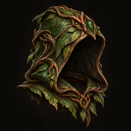
Capuz - Raizes Vivas ComumTodas as classes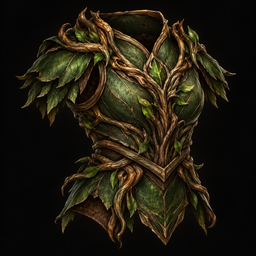
Armadura - Raizes Vivas ComumTodas as classes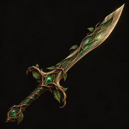
Espada - Raizes Vivas ComumGuerreiro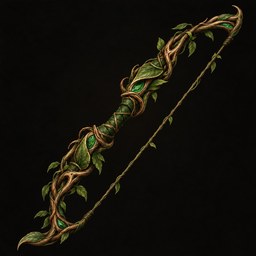
Arco - Raizes Vivas ComumArqueiro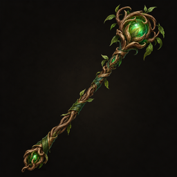
Cajado - Raizes Vivas ComumMago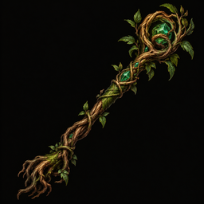
Ramo Vivo - Raizes Vivas ComumAdepto da Natureza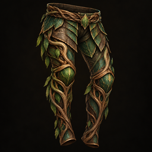
Perneiras - Raizes Vivas ComumTodas as classes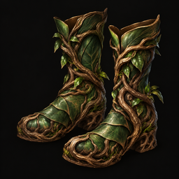
Botas - Raizes Vivas ComumTodas as classesConjunto de Caverna
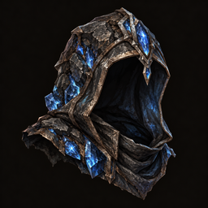
Capuz - Pedra Guardia ComumTodas as classes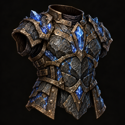
Armadura - Pedra Guardia ComumTodas as classes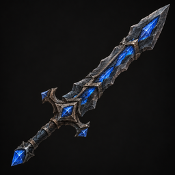
Espada - Pedra Guardia ComumGuerreiro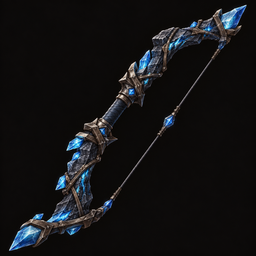
Arco - Pedra Guardia ComumArqueiro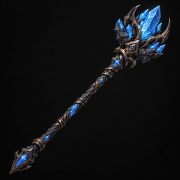
Cajado - Pedra Guardia ComumMago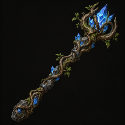
Ramo Vivo - Pedra Guardia ComumAdepto da Natureza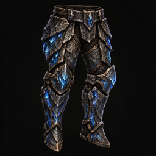
Perneiras - Pedra Guardia ComumTodas as classes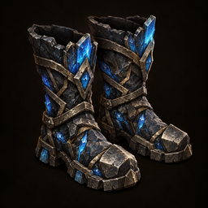
Botas - Pedra Guardia ComumTodas as classesConjunto de Ruinas
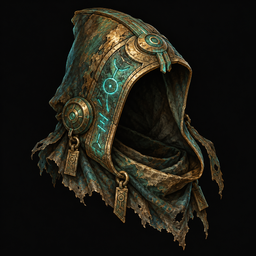
Capuz - Eco Antigo ComumTodas as classes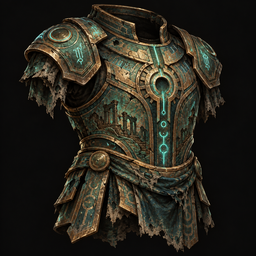
Armadura - Eco Antigo ComumTodas as classes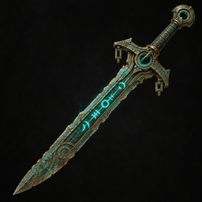
Espada - Eco Antigo ComumGuerreiro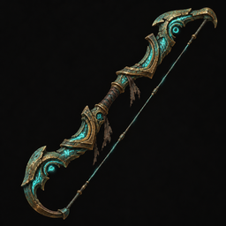
Arco - Eco Antigo ComumArqueiro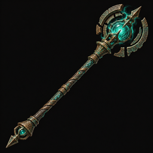
Cajado - Eco Antigo ComumMago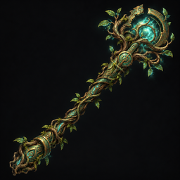
Ramo Vivo - Eco Antigo ComumAdepto da Natureza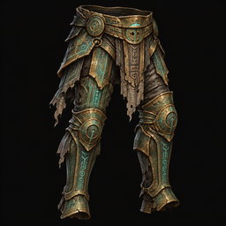
Perneiras - Eco Antigo ComumTodas as classes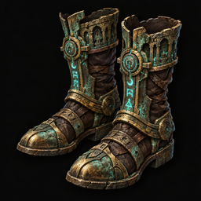
Botas - Eco Antigo ComumTodas as classesConjunto de Pantano
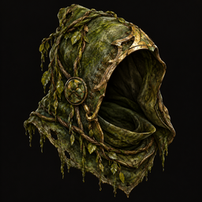
Capuz - Seiva Toxica ComumTodas as classes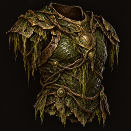
Armadura - Seiva Toxica ComumTodas as classes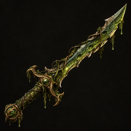
Espada - Seiva Toxica ComumGuerreiro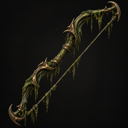
Arco - Seiva Toxica ComumArqueiro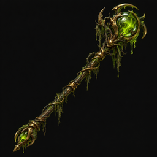
Cajado - Seiva Toxica ComumMago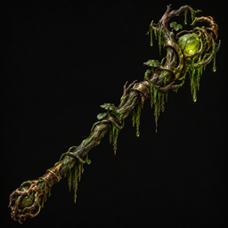
Ramo Vivo - Seiva Toxica ComumAdepto da Natureza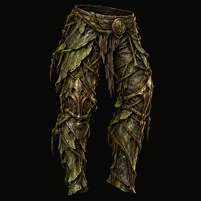
Perneiras - Seiva Toxica ComumTodas as classes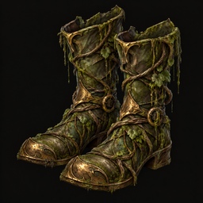
Botas - Seiva Toxica ComumTodas as classesConjunto de Vulcao
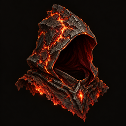
Capuz - Brasas Vivas ComumTodas as classes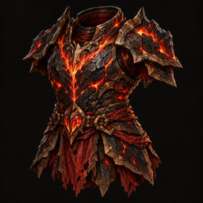
Armadura - Brasas Vivas ComumTodas as classes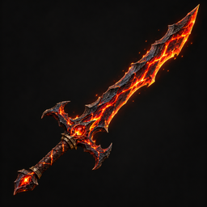
Espada - Brasas Vivas ComumGuerreiro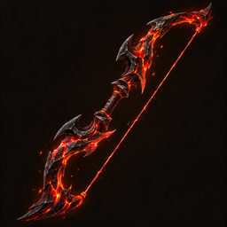
Arco - Brasas Vivas ComumArqueiro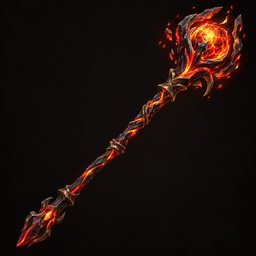
Cajado - Brasas Vivas ComumMago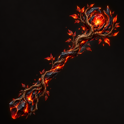
Ramo Vivo - Brasas Vivas ComumAdepto da Natureza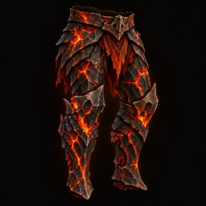
Perneiras - Brasas Vivas ComumTodas as classes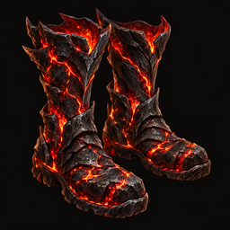
Botas - Brasas Vivas ComumTodas as classesConjunto de Abismo
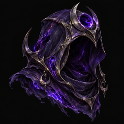
Capuz - Corte do Vazio ComumTodas as classes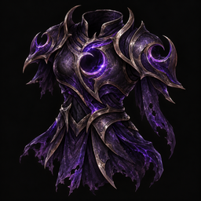
Armadura - Corte do Vazio ComumTodas as classes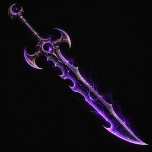
Espada - Corte do Vazio ComumGuerreiro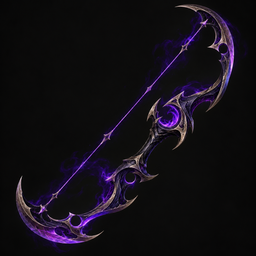
Arco - Corte do Vazio ComumArqueiro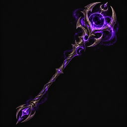
Cajado - Corte do Vazio ComumMago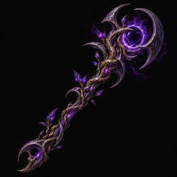
Ramo Vivo - Corte do Vazio ComumAdepto da Natureza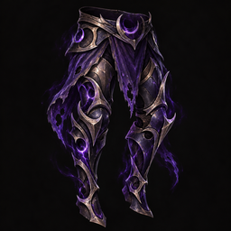
Perneiras - Corte do Vazio ComumTodas as classes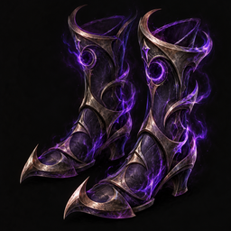
Botas - Corte do Vazio ComumTodas as classesConjunto de Fortaleza
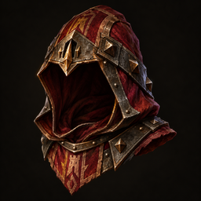
Capuz - Bastiao ComumTodas as classes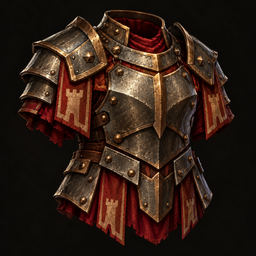
Armadura - Bastiao ComumTodas as classesEspada - Bastiao ComumGuerreiroArco - Bastiao ComumArqueiroCajado - Bastiao ComumMagoRamo Vivo - Bastiao ComumAdepto da NaturezaPerneiras - Bastiao ComumTodas as classesBotas - Bastiao ComumTodas as classesConjunto de Necropole
Capuz - Ceifa Lenta ComumTodas as classesArmadura - Ceifa Lenta ComumTodas as classesEspada - Ceifa Lenta ComumGuerreiroArco - Ceifa Lenta ComumArqueiroCajado - Ceifa Lenta ComumMagoRamo Vivo - Ceifa Lenta ComumAdepto da NaturezaPerneiras - Ceifa Lenta ComumTodas as classesBotas - Ceifa Lenta ComumTodas as classes Conjunto de Citadela
Capuz - Eclipse Preciso ComumTodas as classesArmadura - Eclipse Preciso ComumTodas as classesEspada - Eclipse Preciso ComumGuerreiroArco - Eclipse Preciso ComumArqueiroCajado - Eclipse Preciso ComumMagoRamo Vivo - Eclipse Preciso ComumAdepto da NaturezaPerneiras - Eclipse Preciso ComumTodas as classesBotas - Eclipse Preciso ComumTodas as classes Conjunto de Panteao
Capuz - Farol do Grupo ComumTodas as classesArmadura - Farol do Grupo ComumTodas as classesEspada - Farol do Grupo ComumGuerreiroArco - Farol do Grupo ComumArqueiroCajado - Farol do Grupo ComumMagoRamo Vivo - Farol do Grupo ComumAdepto da NaturezaPerneiras - Farol do Grupo ComumTodas as classesBotas - Farol do Grupo ComumTodas as classes Conjunto de Cataclismo
Capuz - Furia Contida ComumTodas as classesArmadura - Furia Contida ComumTodas as classesEspada - Furia Contida ComumGuerreiroArco - Furia Contida ComumArqueiroCajado - Furia Contida ComumMagoRamo Vivo - Furia Contida ComumAdepto da NaturezaPerneiras - Furia Contida ComumTodas as classesBotas - Furia Contida ComumTodas as classes Conjunto de Paradoxo
Capuz - Ruptura do Ciclo ComumTodas as classesArmadura - Ruptura do Ciclo ComumTodas as classesEspada - Ruptura do Ciclo ComumGuerreiroArco - Ruptura do Ciclo ComumArqueiroCajado - Ruptura do Ciclo ComumMagoRamo Vivo - Ruptura do Ciclo ComumAdepto da NaturezaPerneiras - Ruptura do Ciclo ComumTodas as classesBotas - Ruptura do Ciclo ComumTodas as classes Habilidades · Guerreiro
Recuperar FolegoAtivaEsbarraoAtivaVontade de FerroPassivaInvestidaAtivaVelozPassivaContundirAtivaRefletirPassivaGolpes VelozesAtivaContra-AtaquePassivaBradoAtivaCorte ProfundoAtivaJulgamentoAtivaEscudo de FeAtivaAura DivinaPassivaIraAtivaVallhalaAtivaVoce Ira Me Parar?AtivaVoce Nao e DignoPassivaFurar BlindagemAtivaCortes UltrasonicosAtivaMente LimpaPassivaBomba de FumacaAtivaMata-GigantesAtivaEliminarPassivaAtaque básicoAtaque básico Habilidades · Arqueiro
MirarAtivaCamuflagemAtivaPassos LevesPassivaHeadshotAtivaPulso FirmePassivaRajada de FlechasAtivaErrouPassivaTiro PerfuranteAtivaArmadilhaAtivaEmergencia ArcanaAtivaSobreaquecerAtivaCristalizar ManaPassivaExecutarAtivaPonto FracoAtivaOlhos de FalcaoPassivaSurpresaAtivaMirar no PeAtivaPassos SilenciososPassivaTranquilizanteAtivaTiro CortanteAtivaResistencia FlorestalPassivaAtaque básicoAtaque básico Habilidades · Mago
Explosao de ManaAtivaUltimo RecursoPassivaBola de FogoAtivaMana e VidaPassivaDescarregarAtivaTransbordandoPassivaCongelarAtivaEscudo de ManaAtivaBafo de FogoAtivaFenix SagradaAtivaExplodirAtivaFogo do InfernoPassivaBola de NeveAtivaNevascaAtivaAvalancheAtivaGelo QueimaPassivaConcentracaoAtivaSobrecarregarAtivaCarregarPassivaCorrupcaoAtivaIncorporar DemonioAtivaCanhao de VidroPassivaMísseis MágicosAtaque básico Habilidades · Adepto da Natureza
Semente VivaAtivaRaizesAtivaCiclo NaturalPassivaFlor do PantanoAtivaSeivaPassivaEncanto da BrisaAtivaAura FeericaPassivaColheitaAtivaCancao AncestralAtivaApodrecerAtivaColapso do BrejoAtivaPodridaoPassivaForma VerdadeiraAtivaEsmagar InvasorAtivaCasca AncestralPassivaDecreto da RainhaAtivaCoroarAtivaAsas da RealezaPassivaCasulo de VinhasAtivaJogar EspinhosAtivaJuramento do BosquePassivaAtaque básicoAtaque básico Catálogo de arquivos · Origem, prompts e verificação